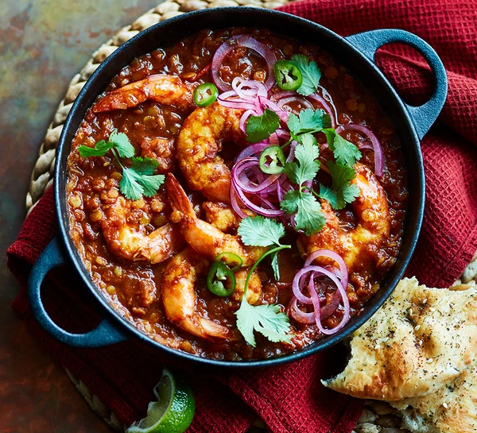

Prawn & Lentil Curry

Description
Freeze the dhal base of this curry for busy weeknights.
It's cheap, easy and really versatile – simply defrost and add prawns, veg or meat
Ingredients
- 100g dried red lentils
- 3 tbsp sunflower oil
- 6 garlic cloves, chopped or grated
- thumb-sized piece of ginger, peeled and chopped or grated
- ¼ tsp ground turmeric
- ¼ tsp chilli powder (we used Kashmiri chilli powder)
- 1 tbsp cumin seeds
- 1 tbsp ground coriander
- 1 tbsp tomato purée
- 1 tsp tamarind paste or lemon juice (optional)
- 400g can chopped tomatoes or passata
- 1 chicken or vegetable stock cube
- 1 tbsp garam marsala
- 200g raw or cooked prawns (we used tiger prawns)
- green chillies, coriander and pickled red onions (see tips), to serve
Method
-
Rinse the lentils a few times, then tip into a bowl,
cover with cold water and leave to soak. Meanwhile,
heat 2 tbsp oil in a shallow casserole or sauté pan,
and cook the onion with a pinch of salt for 10 mins until it starts to turn golden.
Add the garlic, ginger, turmeric, chilli powder, cumin seeds and ground coriander,
and cook for 3 mins until the mixture is sticky.
Stir in the tomato purée and tamarind, if using, followed by the chopped tomatoes.
Simmer for 8-10 mins until you have a thick paste.
-
Rinse the soaked lentils again until the water runs clear, then drain.
Stir the lentils into the tomato base, then tip in 600ml water (use some to swill out the tomato can)
and the stock cube. Bring to the boil, then reduce the heat to a gentle simmer, cover and cook,
stirring occasionally, for 50 mins-1 hr, topping up with more water if needed, until the lentils
are soft and have started to cook down into the sauce. Stir through the garam masala.
Can now be left to cool completely, then chilled for up to three days or frozen for up to six months (see below).
-
To cook the prawns, reheat the chilled or defrosted frozen sauce in a saucepan until simmering (see below),
then tip in the prawns and cook for 5 mins. Season with salt to taste,
then drizzle with the rest of the oil and stir briefly.
Slice the green chillies and sprinkle these over with a few coriander leaves,
then scatter with pickled onions (see recipe below) to serve.